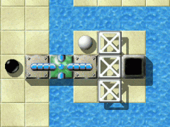

Уровень МесяцаМы хотим каждый месяц больше внимания уделять превосходным уровням. Превосходные уровни это те, у которых средняя оценка пользователей наивысшая и в целом много оценок. Следовательно это Ваш выбор. Поэтому пожалуйста оценивайте уровни, на которых Вы играете и не забывайте присылать Ваши оценки вместе с результатами в конце каждого месяца. Вы можете найти все предыдущие уровни месяца в нашем архиве. Апрель 2008: «Turnstiles for Two - Rhapsody on Turnstiles in Blue and Green»от Ronald LamprechtМир «черного шарика» многогранен: гонки, медитация, посещение храмов и лабиринтов, расшифровка, космические приключения, в одиночку или вдвоем, вдобавок мы даже награждены ночными кошмарами. А как насчет мира музыки? Недостаточно? Вообще нет. Но, даже если перед нами не появится хитроумная мелодия, можно встретить рапсодию. 
Enigma VI # 77
Ученик: «Что?»

Соло дуэтом
О нет! Давайте быстро покинем это ужасное место и вернемся к более приятным вещам.
Эй, это мой текст. Прочь отсюда. Ладно, турникеты … это длинная история. Сами Вы не можете
переплыть реку, но другой шарик может. Однако, может случится так, что он
не сможет вернуться без определенной помощи. «Кроме опыта это, безусловно, и вопрос инстинкта»Я уже довольно давно играл в «Turnstiles for Two». Но сейчас, когда я еще раз внимательнее
присмотрелся к уровню, я вспомнил, что самой большой проблемой для меня было оставаться на месте, после прохода одного
из турникетов. Особенно это подходит к комплексу посреди нижней части, где у Вас не хватает пространства для
маневра. Нет ничего удивительного в том, что доступность кнопок так сильно отличает упрощенный и сложный режимы.
Вдобавок играет роль предварительное планирование! Не только, для поиска прохода к оксидам, но и для возврата от них. Мне понадобилось не так много времени, чтобы понять как поставить эти «острова» в самый центр
моего планирования.
Но настоящей сложностью в «Turnstiles for Two» - снова - было добраться к последнему оксиду. Кроме опыта это, безусловно, и вопрос инстинкта: хотя Вы поняли как это сделать, каждый раз что-то не получается. Вам
нужно добежать до правильного места как можно быстрее, чтобы сесть на транспорт до острова с последним оксидом.
Кстати, есть еще один уровень от Ronald Lamprecht («Cold Meditation»), где Вам нужно
проделать подобное, чтобы пробиться к последней глыбе льда.
Хмм … а теперь?
Итак, давайте посмотрим и послушаем, что нам могут предложить два наших музыканта. Начало довольно расслабляющее. С первых струн, один задает мелодию, а второй подыгрывает. Но вот наши музыканты подошли к центральному лейтмотиву. Каждый, при поддержке другого, выбирает свой собственный музыкальный стиль. Два основных потока, по отдельности дополняются меньшими соло, вместе дополняя основной лейтмотив. Два наших шарика не останутся здесь надолго, а добавят оставшиеся темы их рапсодии: короткое соло, интересную и изящную интермедию и наконец не менее амбициозную техническую часть их концерта - мелодию приправленную немалой порцией перца, которая требует концентрации и аккуратности от обоих сторон. «Я отметил его преданность наиболее полному исследованию новых элементов в игре»Я рад, что меня попросили прокомментировать «Turnstiles for Two» не только потому,
что музыка занимает определенное место в моей жизни, но и потому, что это действительно мой самый любимый
«Командный Уровень» в Enigma. Я знаю, что Ronald задумал его как рапсодию
и определение кажется подходящим, но этот уровень напомнил мне что-то немного более старое. Недавно, я
переосмыслял двухголосную инвенцию Баха и нашел аналогию с тем, что создал Ronald.
У Баха полифонические мелодии игрались двумя руками - каждая была ограничена своим диапазоном,
точь в точь как и у белого и черного шарика есть ограничения на то, что они могут делать и что нет, где они могут
находиться, а где нет. Вместе две мелодичные линии создают гармоничное сочетание, потому что они независимо друг от друга идут по своему пути. И если Вы сможете провести их сквозь немного технически небезупречную, но великолепную музыку,
на последнем рубеже Вас будет ждать достойный главный аккорд.
Одна из вещей, которые я заметил в уровнях Ronald'а, это его преданность наиболее полному
исследованию новых элементов в игре или поиск новых способов их применения. Этот уровень замечательное исследование
свойств зеленых турникетов. Почти каждое действие требует, чтобы оба шарика работали сообща.
Также Ronald сделал уровень более сложным (и увлекательным) настроив уровень так, что из четырех верхних оксидов
максимальное число совпадающих по цвету - одна пара.
Не имеет значения, что Вы собираетесь делать; чтобы закончить уровень Вы должны выбраться обратно наверх и затем опять спуститься. Самой большой трудностью для меня была группа из 4 оксидов в воде в центре нижней
части уровня - действительно сложно избежать ударов того или иного камня, и после этого Вы должны начать все сначала.
Еще один очень трогательный аспект «Turnstiles for Two» это то, что на уровень приятно взглянуть. Вы можете, к примеру, побывать в отпуске на островах Греции благодаря белому цвету и цвету морской волны.
Мои поздравления Ronald'у за такой приятный опыт в Enigma!
Теперь, когда представлены все мотивы, два наших музыканта сами выберут стилистически верные. Они часто возвращаются к центральному мотиву, мастерски его изменяя. Мы подошли к концу, где один из них снова демонстрирует мастерство игры на своем инструменте. Как только они покинули сцену, публика одарила двух наших музыкантов честно заработанными аплодисментами. Какое фантастическое шоу! 
Концертная жизнь: «Си Диез»
Но чтобы достичь концертного уровня, нужно много практиковаться, потому что ошибки жестко наказываются: игрок начинает с самого начала. Небрежность (потеря концентрации или терпения) в важных местах, наподобие центрального мотива, оказывает губительный эффект (Shift-F3).
Я всегда говорил, Все же он прав. Как часто я непроизвольно срывался в холодную воду внутри 'диеза'? Было это из-за недостаточной аккуратности или потому что я забывал переключиться на другой шарик - кто знает. Итак: расслабьтесь, сохраняйте спокойствие и не делайте необдуманных поступков. Все кофеманы среди нас (такие как я) должны приготовиться снизить свое потребление кофе. А чтобы набить руку, может понадобиться бокал красного вина ;-). Кроме того много нервов подпортит центральный мотив (не описанный здесь, потому что мы не очень хотим портить ощущения). Ваш 'выбор инструмента' должен быть хорошо продуманным и предусмотрительным, если Вы не хотите затруднить свой обратный путь к верхним и нижним мотивам. Если 'инструмент' неправильно 'настроен', неизбежно последует комбинация (Shift-F3). Уровень очень притягательный, благодаря использованию белого и черного шариков. У каждого из них есть области, не доступные им обоим, а требующие помощь другого шарика, чтобы пройти к ним (как например 'диез'). А теперь, игроки, настройте ваши 'инструменты' и приготовьтесь к окончанию вашего дуэта. «Зеленому турникету суждено было стать даже более значимым, чем я мог подумать»В качестве крошечного недостатка хотелось бы упомянуть водоворот; совсем не обязательно его использовать. Но может быть я не до конца понял весь его смысл. Поэтому я с большим благоговением просто возвращаюсь обратно в мир звуков Enigma. Возможно это звучит дико, но «Turnstiles for Two» это вынужденная работа.
После выпуска 1.00 мы получили сообщения о неожиданных ошибках в уровнях с турникетами.
В процессе отладки мое внимание привлек код зеленых турникетов. Он использовался только в одном уровне
- «Zig Zag» и даже там он использовался не напрямую. Я начал искать примеры этой разновидности со всем необходимым сопутствующим кодом. И чуть позже я нашел первое непосредственное использование этого шаблона в
уровне для одного шарика, который в середине февраля 2007-го года превратился в «Revolver».
Но я рассчитывал показать настоящую ценность зеленых турникетов в уровнях для нескольких шариков.
Поэтому 13 марта я объявил, что мы должны написать вводный уровень для зеленых турникетов, который должен
демонстрировать некоторые полезные наброски. Спустя два дня я попробовал написать этот уровень. После трех часов
работы я закончил два новых уровня: «Cold Meditation» и «Polar Bear's Paradise».
На следующий день Andreas отчаявшись спросил не «Cold Meditation» ли будет заявленным демонстрационным уровнем.
Конечно нет! Я просто собрал вместе несколько набросков и отвлекся от остальных идей уровней.
Но теперь у меня возникла идея размещения наброска и с каждым шаблоном зеленого турникета, который я добавлял в
уровень мне в голову приходил еще один. После двух вечерних сеансов «Turnstiles for Two» был готов
к спуску на воду утром 17-го марта. Зеленому турникету суждено было стать даже более значимым, чем я мог подумать.

Качели для детей и взрослых
(почти) любого возраста Оба вечера я прерывал свою работу в поисках вдохновения. Я
садился за пианино и всякий раз начинал играть по памяти одно из моих любимых произведений
- «Джазовую рапсодию» Гершвина. Это сработало -
различные независимые шаблоны были собраны в составе основной черно-белой темы и дополнительных эмоций, таких как
алчность и нерешительность. На самом деле вначале Гершвин назвал свое произведение «Ноктюрн в голубых и зеленых тонах», подходящих для эмоций. Так как основной темой моего уровня были зеленые турникеты, то я просто назвал его
«Rhapsody on turnstiles in blue and green».
Периодически пользователи поражались временем, за которое я написал некоторые из моих лучших уровней.
Но именно в этом и проявляется природа творчества. Ты проводишь множество часов играя и разрабатывая Enigma и
вдруг у тебя появляется задумка для уровня. Кстати Гершвин написал свою рапсодию за 24 дня и ночи!
Но свою сольную партию на пианино он довел до совершенства спустя месяцы после мировой премьеры.
В любом случае «Turnstiles for Two» не был завершен за два вечера. Я обнаружил
одну незаметную деталь, которую сначала не знал как исправить - честное случайное распределение оксидов.
Простое перемешивание всех 16-ти оксидов не подходило. Например, если все верхние оксиды образуют пары,
то бессмысленно потом возвращаться в верхнюю часть. Но ключевой момент уровня в том, чтобы Вы вернулись
в верхнюю часть после исследования нижней. В итоге, я написал небольшую специальную функцию для Lua, которая
распределяла оксиды в определенном порядке. Но эта проблема честного случайного распределения оксидов теперь была
добавлена в список того, что надо сделать в Enigma. В октябре на то, чтобы придумать и запрограммировать алгоритм,
который решал бы эту довольно сложную проблему для следующих уровней, ушел целый месяц работы.
Спустя год, оглядываясь назад я заметил, что уровень стал сложнее, чем я его задумывал.
Особенно стоит отметить, что упрощенный режим должен был решаться проще, воронка не нужна, а сложный режим
должен был заставить игрока использовать самые разные шаблоны в отличие от упрощенного режима.
Важной южной розеткой я увеличил трение и упростил центральную часть в упрощенном режиме. Я надеюсь, что дал
многим игрокам шанс насладиться непостоянством «Turnstiles for Two».
Спасибо за хорошие оценки и хорошего времяпрепровождения!
Большое спасибо Ronald Lamprecht за этот музыкальный шедевр. NObby
|